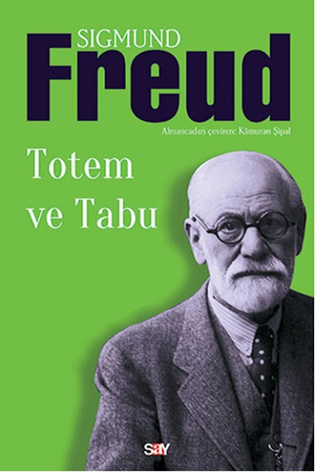

Personal Interests
I'm a music enthusiast. I'm especially interested in Anatolian and Persian folk/ethnic music. I also like listening jazz music.
I'm a member of METU Turkish Folklore Club and former member of ODTÜ Köprü (a student club at METU which works on several social responsibility projects.).
I enjoy reading books especially about philosophy and social psychology. Here are some books which I recommend:
